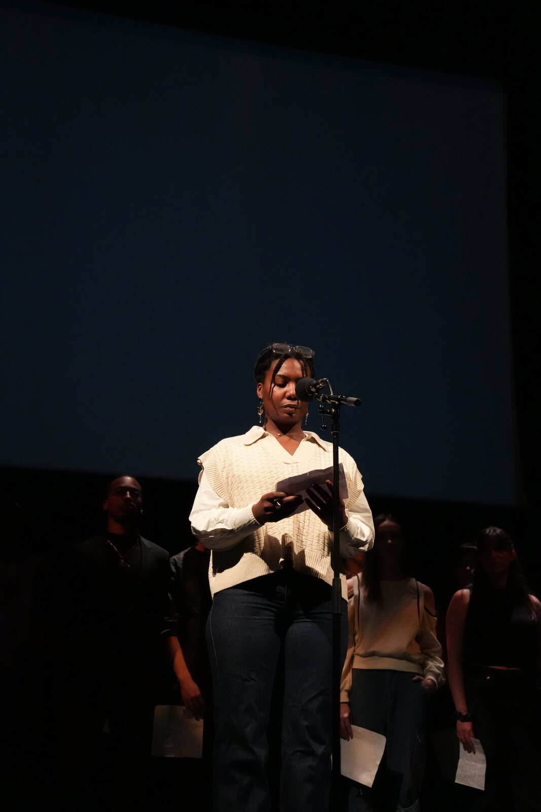
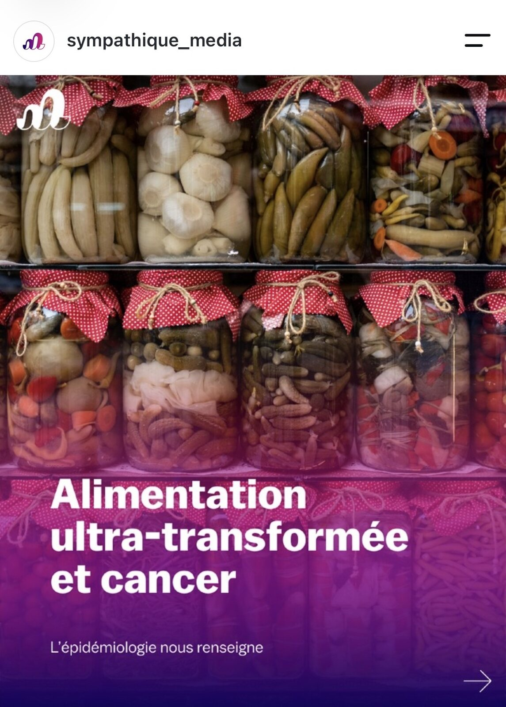
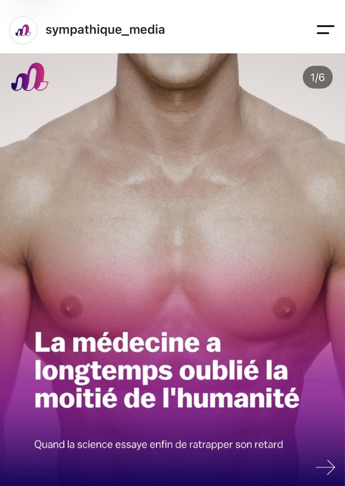
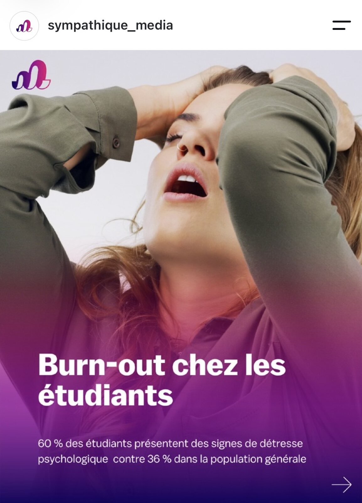
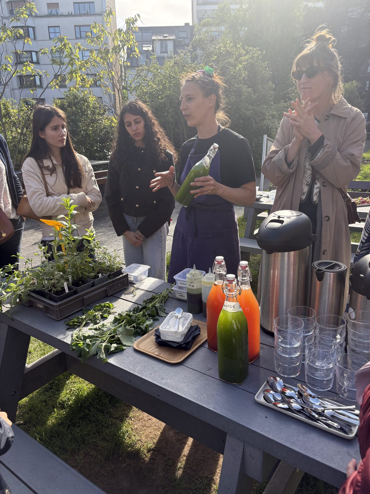

Co-fondatrice · Rédactrice en chef
Onzditoo
J’ai cofondé un média pour libérer la parole des jeunes sur la santé mentale.

Mon objectif
Orienter mon parcours vers le marketing des industries de santé et les affaires médicales.
Expériences
5 projets à faire défiler Flèches, onglets ou glisser · « Voir plus » pour le détail
Co-fondatrice · Rédactrice en chef
J’ai cofondé un média pour libérer la parole des jeunes sur la santé mentale.



Freelance contenu santé · Avril 2026
Des contenus santé clairs et engageants pour Sympathique Média.

Ambassadrice événementielle
J’ai imaginé et organisé un événement climat, biodiversité & santé.
Création artistique & littéraire
Écrire, peindre et lire sur scène autour d’un thème : l’Androgyne.
Théâtre · 5 ans
Cinq ans de théâtre pour gagner en aisance à l’oral.
Parcours
Contact
sarah9noel@gmail.com · Disponible pour un stage à partir d’avril 2027